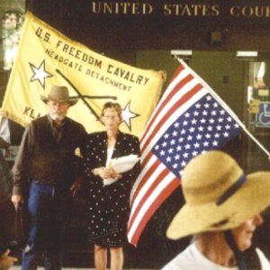

|
Report Number Twelve - Roger Fredinburg interview w/Barbara Martin By: Jeff Head, September 7, 2001 [interview transcript provided by AuntB of FreeRepublic] On Thursday, September 6, 2001, the following transcript of a September 5th interview with Barbara Martin of Klamath Falls was published on the FreeRepublic Forum by AuntB. AuntB has been very active in the Stand at Klamath Falls as a supporter, having visited the headgate area many times and being actively involved with activities there, the Klamath Petition, drive, convoy relief, etc. Barbara Martin, a realitor in Klamath Falls and a principle supporter of the farmers and their rights, was served a restraining orders regarding the headgates by the Federal Government. She and Stan Thompson (also served with a restraining order) appeared in Eugene, OR, before Federal Judge Ann Aiken for a "show cause hearing" on September 4th. Aiken is the same federal judge who found in favor of the environmental biological opinion on April 7th of this year that set the lake level at such high levels in order to "protect" the sucker fish.
 Stan and Barbara outside the Courthouse. Roger Fredinburg show 9/05/01 9:00p.m. pacific Transcript by AuntB of FreeRepublic Fredinburg: F, Martin: M, Bair: B F: Agents of the U.S. Fish and Wildlife Services served a leader at the Klamath Head gates, Barbara Martin with legal papers including a complaint, motion for temporary restraining order and a motion to show cause and a temporary restraining order barring her from occupying, entering upon the area within the fence surrounding the head gates or interfering with impeding, damaging or obstructing the operations of the Bureau of Reclamation water control headgate…and on and on it goes. We have Barbara Martin and Carmen Bair with us now. What is this, what is going on over there now??Time does not permit to bring the entire interview. Barbara was the calm, civil person on radio that she is in person. Her hearing is scheduled in about 30 days in Eugene. Thanks to Roger for bringing this information and these two lovely Klamath Basin ladies. AuntB I have spoken with, participated with, despaired with, rejoiced with and worked with Barbara and her husband (who is a Taxidermist in Klamath Falls) on many occassions there at the headgates. Barbara has been unrelenting in her efforts to get the water turned back on for these fourteen hundred farming families who have been so devastated by the frivoulous, ludicrous and tyranical ruling that shut all of their irrigation water off in April. It was Babara who on July 14th so effectively pled with the Federal Marshals that first day after they had taken the headgates back from the few of us who had occupied them on July 13th. She has been untiring in her efforts since at the headgates, regarding the Klamath Petition, regarding Freedom Day, regarding the documentation about the ownership of the headgates which led to the farmers deciding to breech the headgate facility on Augsut 29th and in every facet of the confrontation. Would that we had millions of individuals like Barbara Martin and the other patriotic and couragous people standing up for their rights, for their liberty in the Klamath Basin. The plans, policies and designs of those who are destroying our liberties would be sent back to the dark recesses of those conspiring minds if we did, never to see the light of day! LET THE WATER FLOW IN THE KLAMATH BASIN!
Jeff Head
SIGN THE NATIONAL PETITION FOR THE KLAMATH BASIN CRISIS
CLICK BELOW FOR BOOKS/NOVELS OF INTEREST: 


[Please consider visiting these sites as well] The Attack on America Memorial Site - The Winning Iraqi Freedom Dedicatory Site
Copyright © 2001-2006 by Jeff Head, All Rights Reserved
|